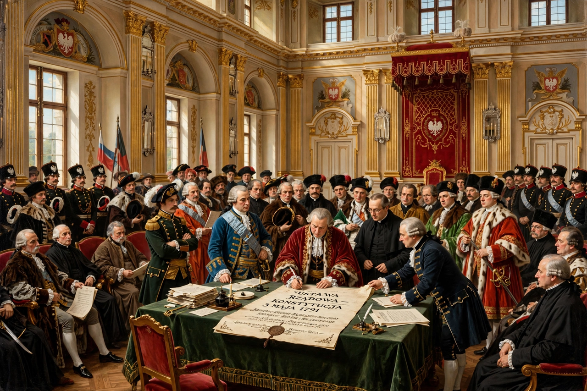

The Constitution of 3 May 1791 (Polish: Konstytucja 3 Maja) was adopted by the Great Sejm of the Polish–Lithuanian Commonwealth. Often described as Europe's first and the world's second modern written national constitution (after the United States Constitution of 1788), it sought to reform the ailing Commonwealth.

| Constitution of 3 May 1791 | |
|---|---|
| Adopted | 3 May 1791 |
| Authors | Stanisław August Poniatowski, Stanisław Małachowski, Hugo Kołłątaj, Ignacy Potocki, Scipione Piattoli |
| In force | 1791–1792 (overthrown 1792–93) |
The constitution introduced majority voting, abolishing the liberum veto; established separation of powers (legislative Sejm, executive King and Guardians of the Laws, independent judiciary); made the throne hereditary in the Saxon Wettin line after Stanisław August; extended rights to burghers and protection (though not emancipation) to peasants; and preserved Catholicism as dominant while guaranteeing religious tolerance.
Conservative magnates formed the Targowica Confederation and invited Russian intervention; the Russo-Polish War of 1792 ended in the king's capitulation, the Second Partition (1793), and the Grodno Sejm's annulment. The constitution's memory became central to Polish national identity, and 3 May is a national holiday.
Recreated from memory.